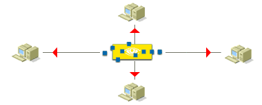

Projet industriel SNACK
Secure Network Access Control for Kids
Nicolas BOUGET, Julien GUÉPIN, Marc PINHÈDE, Julien VAUBOURG
Encadré par Guillaume ROCHE et Jean-François SCHEID
21 mars 2013


Plan
- Contexte
- Gestion du projet
- Authentification sur le réseau
- Sauvegarde de configurations
- Interface utilisateur SNACK
- Améliorations possibles
Contexte : le projet industriel
Projet dans un contexte industriel en 3ème année de TELECOM Nancy
Découverte de la gestion du cycle complet d'un projet
250 heures par étudiant (12 heures par semaine)
Suivi par un encadrant industriel (Guillaume ROCHE) et un encadrant universitaire (Jean-François SCHEID)
Contexte : le client, b.h. consulting
Entreprise spécialisée dans l'implantation de réseaux d'entreprise
Petite entreprise à taille humaine
Fondée par Bertrand PÉTAT en 2000

Contexte : le client, b.h. consulting
4 employés :

Contexte : notre équipe
- Nicolas BOUGET, chef de projet (TRS)
- Julien GUÉPIN (IL)
- Marc PINHÈDE (LE)
- Julien VAUBOURG (TRS)
Contexte : objectifs du projet
Sécurite des réseaux d'entreprise
Contrôle des accès au réseau
Gestion des configurations des équipements
Application simple à installer et à utiliser
Notre solution : SNACK (Secure Network Access Control for Kids)
Gestion du projet
Réunions :
- hebdomadaires avec Guillaume ROCHE
- mensuelles avec Jean-François SCHEID
Outils utilisés :
Gestion du projet : VMproject
Application proposée par l'école pour aider la gestion des projets industriels
Définition et affectation des tâches, suivi de progression
Génération d'un diagramme de Gantt

Feuilles de temps
Rapports de réunions
Gestion du projet : diagramme de Gantt
Gestion du projet : diagramme de Gantt
Gestion du projet : Redmine
Dépôt de sources Subversion hébergé par l'école
Tickets : gestion des bugs et demandes de fonctionnalités
Conventions de codage sur le wiki

Demande de fonctionnalité : afficher les logs de l'interface

Contrôle d'accès au réseau
Authentification des utilisateurs du réseau de l'entreprise
Journalisation des accès
Plusieurs méthodes d'authentification :
- Certificat
- Identifiant et mot de passe
- Adresse MAC
Contrôle d'accès : implémentation

Utilisation du protocole 802.1x
Implémentation avec le serveur libre FreeRadius
Installation sur un serveur GNU/Linux Ubuntu Server

Stockage des données dans MySQL
Fonctionnement de 802.1x

Fonctionnement de 802.1x

Contrôle d'accès : certificats
Méthode d'authentification la plus sécurisée
Utilisation du protocole EAP
Deux méthodes proposées :
Hashage avec MSCHAPV2
Fonctionnement de TTLS

Contrôle d'accès : problèmes rencontrés
Matériel : installation sur les machines en salle PI
Environnement de travail : utilisation de VM, tests longs
Documentation sur l'interaction Cisco / Radius
Certificats sous Windows
Gestion des configurations
Sauvegarde des configurations des équipements réseau
Versionnage et comparaison des configurations
Restauration d'une ancienne configuration
Gestion des configurations : implémentation
Sauvegarde manuelle et à chaque connexion à l'équipement
Transmission de la configuration par TFTP
Détection de fin de connexion grâce à un trap SNMP
Versionnage des configurations dans un dépôt Git
Fonctionnement de la sauvegarde : authentification

Fonctionnement de la sauvegarde : écriture mémoire

Gestion des configurations : problèmes rencontrés
Détection fin transmission TFTP
Interface utilisateur SNACK
Application web simple, ergonomique et sécurisée
Gestion des utilisateurs du réseau
Configuration du serveur Radius
Supervision des accès réseau
Gestion des configurations
Interface utilisateur : implémentation

Serveur LAMP
CakePHP pour les traitements serveur

Bootstrap pour l'affichage moderne
jQuery pour simplifier le traitement côté client et les animations
Interface utilisateur : problèmes rencontrés
Schéma de la base de données Radius
Fusion CakePHP / Bootstrap
Améliorations possibles
Terminal virtuel
Gestion des équipements :
- Versions d'IOS
- Firewall Astaro
- Auto-configuration des switchs
Utilisation de LDAP au lieu de MySQL
Tests unitaires
Conclusion
Solution complète, simple et fonctionnelle
Utilisation en production rapidement par b.h. consulting
Projet enrichissant et utile
Vacances !
Merci pour votre attention
←
→
/